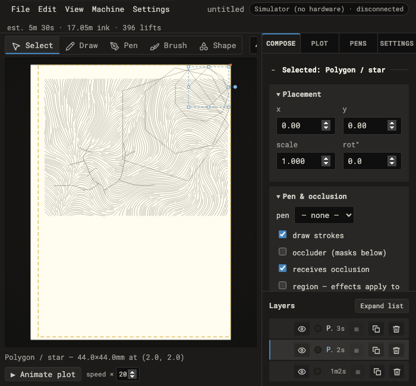
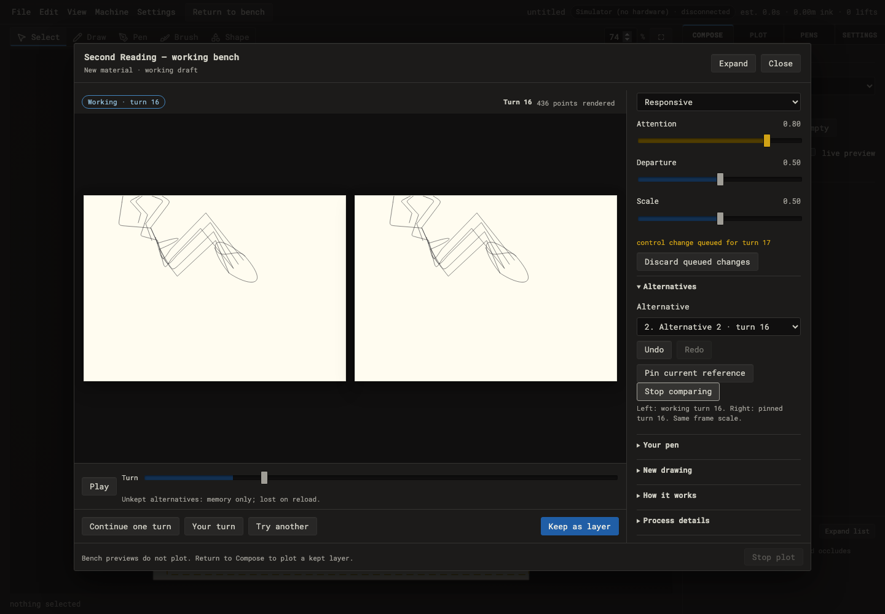
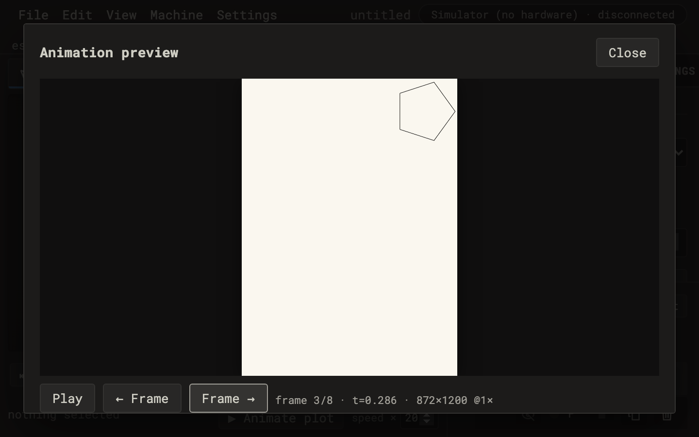

Cosmetic sheen
Softer paper edge and shadow; optical icon and disclosure alignment; faint raised edges; tidier readouts; quieter inactive borders. The accepted layout and interactions remain.
28 stable recipe and drawing-content pairs match the precision-pass captures. Source-only captures have no page exceptions or horizontal page overflow. 112 browser regressions passed and the production build completed. Native Mac appearance remains ready for Ian to check; zoom is emulated.
1. compose dense selected 700x650
Precision passWith sheen
2. second reading comparison 1440x1000
Precision passWith sheen
3. animation render popup zoom equivalent 720x450 dpr2
Precision pass
With sheen Capture checks